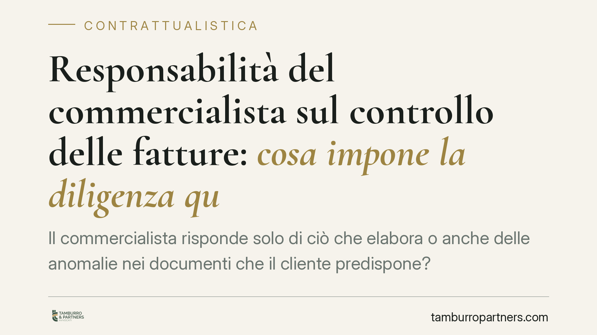

Responsabilità del commercialista sul controllo delle fatture: cosa impone la diligenza qualificata
Il commercialista risponde solo di ciò che elabora o anche delle anomalie nei documenti che il cliente predispone? La questione torna centrale: la diligenza qualificata del professionista, ancorata all'art. 1176 comma 2 del codice civile, può estendere l'obbligo di controllo e segnalazione oltre il perimetro formale dell'incarico. Un tema che tocca direttamente la redazione del mandato.

Il punto giuridico
La domanda è ricorrente nello studio e tra gli operatori: quando il cliente cura in autonomia la fatturazione, il commercialista deve comunque verificarla? La risposta non è secca. Ruota attorno al concetto di diligenza qualificata e, prima ancora, attorno a come è scritto il contratto di mandato professionale.
Va premessa una cautela metodologica: ogni riferimento a specifiche pronunce va verificato nel testo ufficiale. Qui ragioniamo sui principi consolidati, non su massime di dettaglio non riscontrabili.
Inquadramento normativo
Il cardine è l'art. 1176 del codice civile. Il primo comma fissa la regola generale: nell'adempiere l'obbligazione il debitore deve usare la diligenza del buon padre di famiglia, cioè lo standard di una persona mediamente attenta.
Il secondo comma innalza l'asticella per chi esercita un'attività professionale: la diligenza va valutata "con riguardo alla natura dell'attività esercitata". È la cosiddetta diligenza qualificata. Il commercialista non è tenuto allo standard dell'uomo comune, ma a quello di un professionista competente nel proprio settore.
Da qui discende un punto spesso frainteso. La diligenza qualificata non trasforma il professionista in garante assoluto del risultato né in controllore totale di ogni attività del cliente. Il discrimine è la riconoscibilità dell'anomalia: ciò che un commercialista diligente avrebbe dovuto rilevare ed evidenziare, non ogni possibile errore occultato o estraneo al suo perimetro conoscitivo.
Resta fermo che parte della dottrina e degli operatori esprime riserve su letture estensive del dovere di controllo, temendo un ampliamento indefinito della responsabilità professionale. È un dibattito aperto, non una conclusione acquisita.
Implicazioni pratiche
Per il professionista il nodo non è solo tecnico-contabile: è contrattuale. La tenuta della sua posizione dipende in larga misura da come è delimitato l'oggetto del mandato.
Se l'incarico è generico ("assistenza fiscale e contabile"), il perimetro resta sfumato e la diligenza qualificata rischia di dilatarsi per via interpretativa. Se invece il mandato distingue con precisione le attività a carico del professionista da quelle che restano in capo al cliente — ad esempio l'emissione e la fatturazione gestite internamente dall'impresa — la ripartizione delle responsabilità diventa opponibile e difendibile.
Il contratto, quindi, non è un adempimento formale ma lo strumento primario di gestione del rischio. Alcuni profili meritano attenzione:
- la delimitazione dell'oggetto, che individua con chiarezza cosa il professionista elabora e cosa riceve già predisposto;
- le clausole di ripartizione delle responsabilità, che chiariscono su chi grava la correttezza del dato originario;
- le eventuali clausole di manleva, utili ma non onnipotenti: non valgono a escludere la responsabilità per dolo o colpa grave, né a neutralizzare obblighi di segnalazione delle anomalie evidenti.
Anche con il miglior contratto, infatti, il dovere di segnalare un'irregolarità riconoscibile difficilmente può essere escluso: è parte della prestazione professionale, non un di più.
Per il cliente-impresa il messaggio è speculare. Affidare la fatturazione a sé stessi non trasferisce automaticamente al commercialista la responsabilità di eventuali errori, così come non la trattiene integralmente. Conta ciò che è scritto e ciò che è stato comunicato.
Cosa fare in concreto
- Rivedere l'oggetto del mandato: specificare per iscritto quali attività sono a carico del professionista e quali restano in capo al cliente, evitando formule generiche.
- Formalizzare le segnalazioni: ogni anomalia rilevata va comunicata in forma tracciabile (PEC, email, verbale), con data certa e indicazione della condotta suggerita.
- Conservare la documentazione ricevuta: archiviare ciò che il cliente trasmette e ciò che predispone autonomamente, per ricostruire a posteriori il perimetro effettivo dell'incarico.
- Inserire clausole di ripartizione chiare, consapevoli che le manleve non coprono dolo e colpa grave e non elidono l'obbligo di segnalazione.
- Verificare la copertura assicurativa professionale: controllare massimali, esclusioni e la coerenza tra le attività assicurate e quelle effettivamente svolte.
Una governance documentale ordinata, più ancora della singola clausola, è ciò che consente di dimostrare la diligenza effettivamente adottata.
---
Contributo informativo a cura di Tamburro & Partners Avvocati - Avv. Giuseppe Tamburro. Non costituisce parere legale.
Ogni contratto ha il suo equilibrio.
Se vuoi una revisione delle clausole o una redazione su misura, scrivi allo studio. Ti rispondiamo entro un giorno lavorativo.